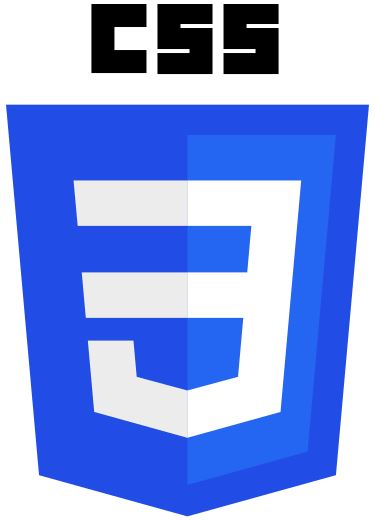

FR / EN
Je suis archéologue et géomaticien, passionné par les cartes, les vieilles bâtisses et les cimetières.
J'aide les spécialistes du patrimoine à améliorer l'usage de leurs données géographiques, ainsi que leurs outils et procédés.
J'ai commencé à apprendre à coder parce que je devenais frustré par l'environnement rigide des Systèmes d'information géographiques traditionnels. De la simple visualisation des données et de la cartographie en ligne, mon attention s'est depuis déplacé vers ce qui se passe en arrière-plan.
La gestion de données est un de ces aspects de l'interface administrateur qui, au départ, me semblait aride et rebutant. Avec le temps, c'est devenu un de mes dadas en raison de la puissance que peuvent avoir le bon outil et le bon système.
Je me suis intéressé à l'automatisation par curiosité pour son potentiel de traitement et d'analyse de grands volumes de données. Découvrir ce qui se passe sous le capot m'aide à faire des gains d'efficacité, ce qui ouvre la porte à plus de possibilités et à de nouvelles idées.
